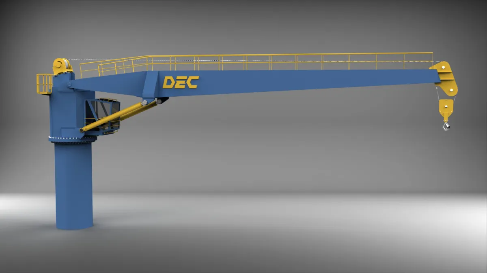
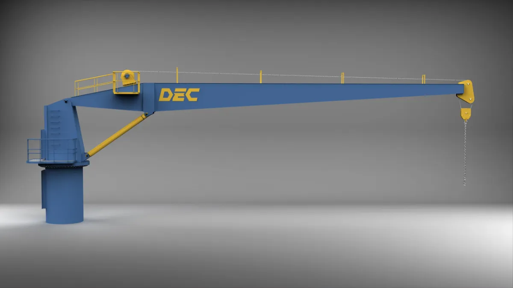
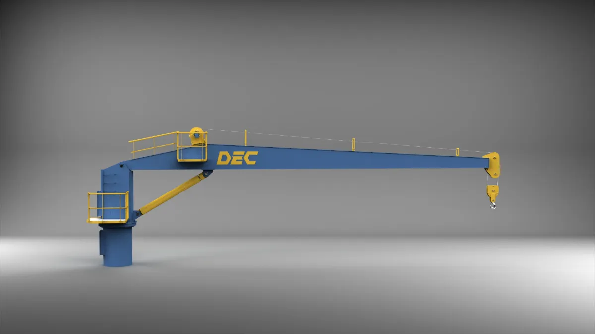

DEC CRANE STIFF BOOM CRANES
DEC Crane Stiff Boom Crane are versatile, high-performance cranes designed for u in marine, offshore, and wind industry applications. Engineered for durability, reliability, and efficient performance, these cranes are built to handle a wide variety of tasks across various industries. Their exceptional weight-to-power ratio and customizable features make them ideal for lifting and handling cargo, containers, hoses, provisions, and other materials.
MARINE APPLICATIONS
DEC Stiff Boom Cranes are highly valued in the marine industry for their robust design and high lifting capacity. They are commonly used for tasks such as loading and unloading supplies, containers, and equipment, and are suitable for operation on service vessels, docks, and harbor environments.
Typical Marine Applications:
✔ Service cranes – Used for maintenance and general lifting operations
✔ Hose handling cranes – Safe and efficient handling of oil and bunker hoses
✔ Container and cargo handling cranes – Optimized for lifting and positioning containers and cargo

OFFSHORE APPLICATIONS
For offshore environments, DEC Stiff Boom Cranes are engineered to perform in harsh conditions, providing high-performance lifting and handling. These cranes can be customized according to customer requirements and are available with various certifications to meet international offshore standards.
Typical Offshore Applications:
✔ Shipboard cranes – Installed on vessels for multi-purpose lifting tasks
✔ Ship-to-Ship cranes – Designed for secure and efficient cargo transfer between vessels
✔ Hose handling cranes – Specifically engineered for offshore oil rigs and vessels
✔ Provision cranes – Used for lifting and handling supplies on offshore platforms

WIND INDUSTRY APPLICATIONS
DEC Stiff Boom Cranes are also extensively used in the wind industry to support offshore wind farms, particularly for unloading supply vessels and handling materials on Transition Pieces (TP) and offshore platforms. These cranes are customized to accommodate various sea states (SWH), ensuring reliable performance regardless of weather or sea conditions.
Typical Wind Industry Applications:
✔ Platform cranes – Used on offshore wind platforms for a variety of lifting operations, including maintenance and material handling
✔ Substation cranes – Deployed on offshore substations for handling equipment, tools, and materials

KEY FEATURES
✅ Electro-hydraulic drive system for smooth and efficient operation
✅ Designed for low and high-temperature operations
✅ Integrated Hydraulic Power Unit (HPU) for a compact and efficient design
✅ Safe Working Load (SWL): Ranging from 1T to 100T
✅ Max Outreach: From 5m up to 50m
✅ Unlimited 360-degree slewing for maximum flexibility
✅ Fail-safe brakes on all crane movements
✅ Operator control platform for enhanced safety and ease of operation
✅ Standard pedestal height ready for mounting and welding to the vessel’s main steel structure
✅ Stepless speed control for all crane motions, including hoisting and lowering of the winch
✅ Automatic hook stop in the top position for safety
✅ Hand-operated pump for emergency release of the winch brake and slewing gear
Built with high-quality materials and cutting-edge technology, DEC Stiff Boom Cranes ensure long-lasting, reliable, and trouble-free operation across marine, offshore, and wind industry applications, delivering safety, efficiency, and flexibility for every project.

OPTIONAL FEATURES
🔹 Class Certification according to selected rules and regulations
🔹 Constant Tension System for load stability
🔹 Overload Protection Systems:
• MOPS – Manual Overload Protection System
• AOPS – Automatic Overload Protection System
🔹 Lifting of personnel (Man-riding) for specialized operations
🔹 Automatic hook stop in both top and bottom positions
🔹 Remote control (wired or wireless) for flexible operation
🔹 Increased pedestal height for specific installation requirements
🔹 Limit switches for luffing, slewing, and hoisting operations
🔹 Electrical slip ring for connecting various electrical and electronic equipment
🔹 Load indicator for enhanced safety and monitoring
🔹 Enclosed operator cabin for added protection and comfort
🔹 Oil cooler for operation in hot climates
🔹 Stainless steel hydraulic piping for durability and corrosion resistance
🔹 AHC – Active Heave Compensation for precise load control in dynamic conditions
🔹 ATEX Zone 1 and 2 execution for hazardous environments